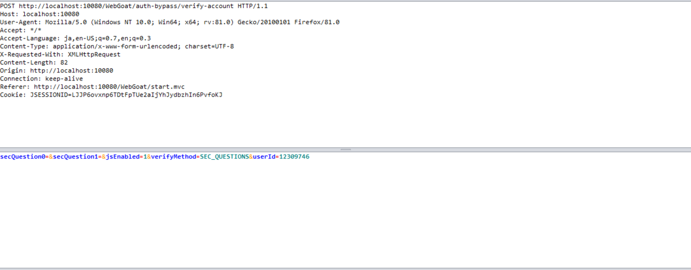
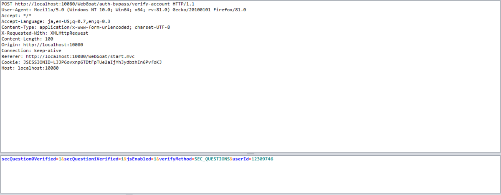
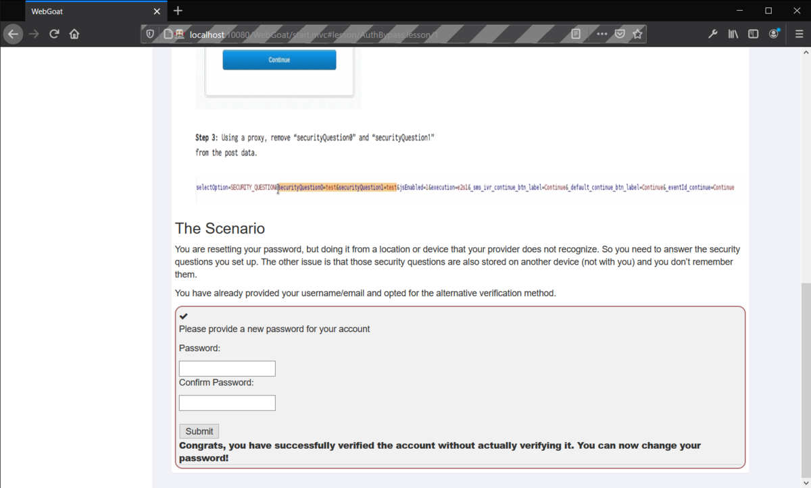

WebGoat-10: Authentication Bypasses
二段階認証にも脆弱性は存在する。
Page 2
アカウント情報の再設定などにありがちな秘密のパスワードをハックせよ、という問題。
submitボタンを押せばPOSTリクエストが送信されるので、OWASP ZAPでPOSTリクエストをブレークさせる。
secQuestion0とsecQuestion1というパラメータが正しいかどうかで認証しているようだ。

ページで示されている例とは異なり、これらのパラメータを削除してリクエストしても認証は回避できない。
さっぱりわからないので、ヒント通りパラメータ名をそれぞれsecQuestion0VerifiedとsecQuestion1Verifiedに変えた上で、=のあとに1を入力してみる。

あっさり通っちゃった。

いろいろ試してみたところ、secQuestion<x>EnabledでもOKだった。ただし、=1としなければならない。
hoge=1&fuga=1というぐあいに元パラメータ名の面影をなくしてみるのはだめだった。
secQuestion<x>という文字列があるかどうかで判断しているのか？サーバ側の処理が全然わからない。